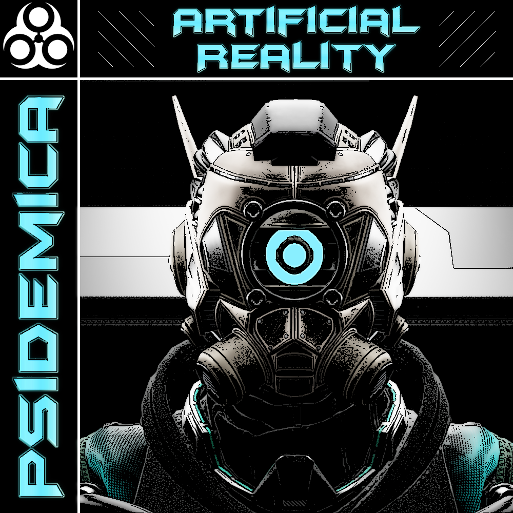

Featured Projects
Selected projects demonstrating full-stack development, backend systems, and cloud-integrated applications.
Psidemica — Full-Stack Platform & E-Commerce System

Designed and built a multi-feature web platform from scratch, evolving from a portfolio site into a full-stack application with user accounts, e-commerce, and dynamic content.
- Built custom e-commerce system with cart, transactions, and inventory management
- Implemented authentication, sessions, and user-specific dashboards
- Integrated external APIs to deliver dynamic real-time content
- Developed admin tools for managing users and application data
- Created Python scripts for automated testing and validation
Tech: PHP, MySQL, JavaScript, Python, AWS
Key Impact: Built from scratch, handled full application lifecycle, and designed scalable architecture.
Owl Assist — AI-Powered Information System
Full-stack virtual assistant used to deliver automated responses to university inquiries, integrating conversational AI with real-time data pipelines.
- Built Flask-based backend integrating Dialogflow for natural language processing
- Developed web scraping pipelines using Selenium and BeautifulSoup
- Designed data flow from scraped sources to chatbot responses
- Collaborated on cloud deployment across AWS and Google Cloud
- Led development efforts and mentored team members
Tech: Python, Flask, AWS, GCP, Dialogflow, Selenium
🔒 Private repository — architecture and implementation details available upon request
Key Impact: Trained new-hires, added scalable features, and improved documentation.
Lifebook — Modular Full-Stack Hub Platform (In Progress)
Designing a modular web application allowing users to create customizable “hubs” for organizing tools, data, and workflows.
- Built React frontend with reusable component architecture
- Developed REST APIs using ASP.NET for data and user management
- Implemented authentication and user-based routing
- Containerized development using Docker for consistent environments
Tech: React, Tailwind, ASP.NET, Docker
Key Impact: Built from scratch, handled full application lifecycle, and designed scalable architecture.
Engineering Projects
- Java Deadlock Monitor - Detects and analyzes thread deadlocks in concurrent systems
- C Pay System - Simulates payroll processing with structured data handling
- C++ Rolodex - Data structure-based contact management system
Automation & Tools
- Linux User Management Script - Automates account creation, locking, and auditing
- Music Library Manager - Python tool for metadata editing and playlist generation
- Audio Conversion Scripts - Batch processing for format conversion (MP3, AIFF, FLAC)
- Utility Shell Scripts - File cleanup, disk monitoring, and command-line tools
Foundations
Early projects focused on frontend fundamentals and JavaScript development.
- JavaScript Calculator
- Drum Machine
- Markdown Previewer
- Random Quote Machine
- Roman Numeral Converter
- Shift Cipher
- Survey Form
- Temperature Converter